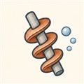
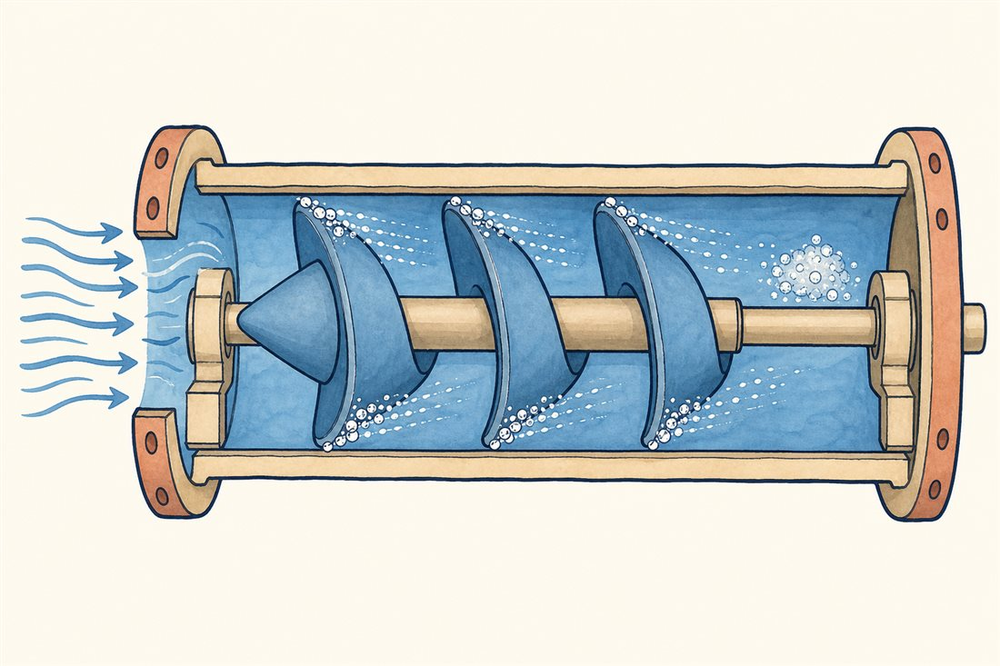
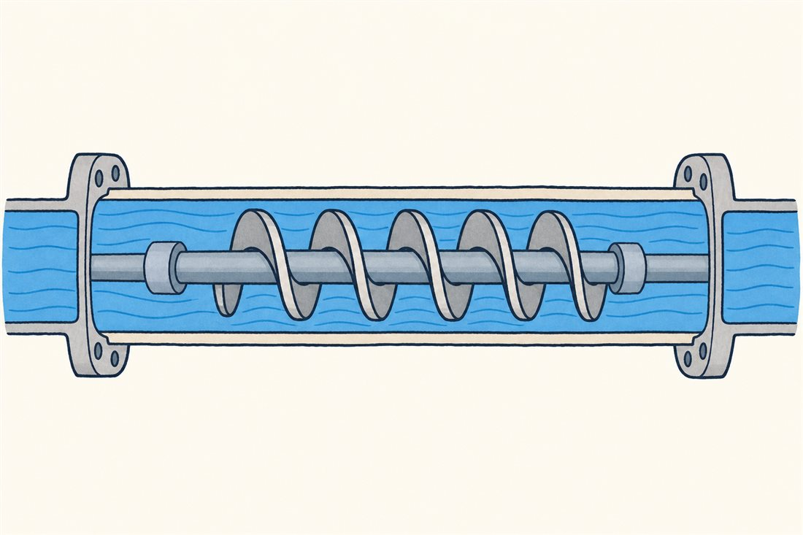
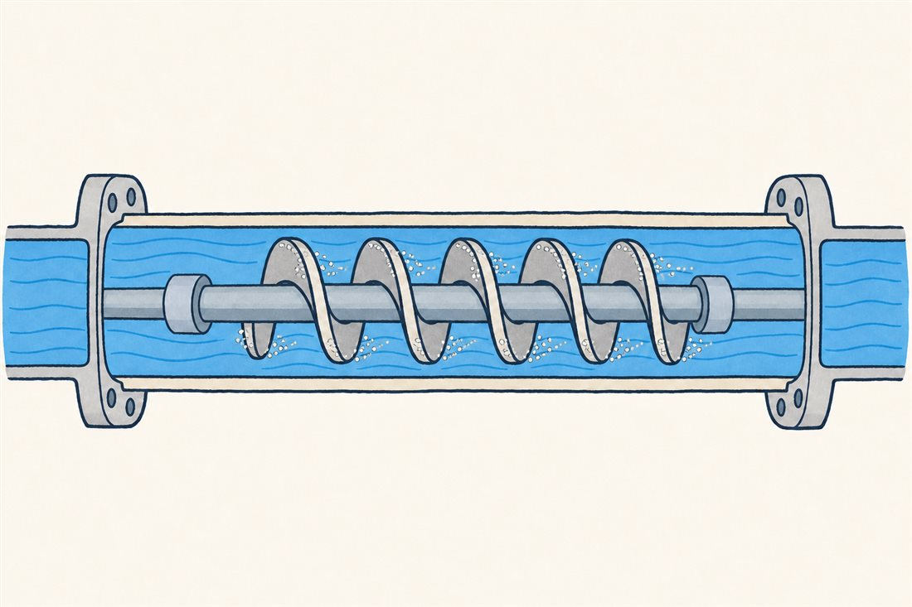
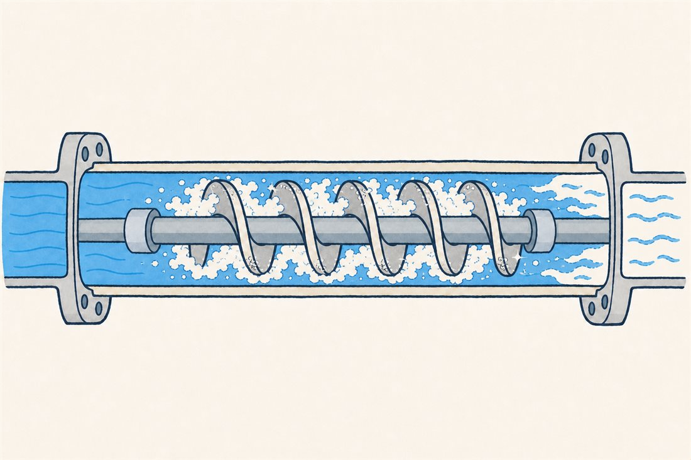
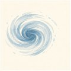
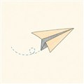
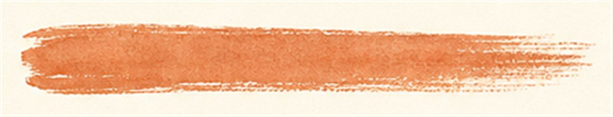

第3巻 だい2わ ── 泡の章すいこみ口の たたかい
前話の宿題から始めます。ポンプの入口で使える元手は、入口の全圧がその温度の蒸気圧をどれだけ上回っているか——タンク圧に液柱や機体加速の水頭を足し、配管損失を引いた吸込余裕（NPSH）だけでした。ここに液体の意地悪な性質が重なります——液体は「引っぱれない」。羽根が液を吸おうと局所の圧力を下げすぎると、液はその場の蒸気圧を割って沸騰し、泡が生まれる。沸点よりずっと冷たい液でも、圧力が蒸気圧を割ればその場で沸きます。これがキャビテーション——ロケットポンプの吸い込み口で毎秒起きている、静かな戦いです。
泡そのものより怖いのは、泡の最期です。下流で圧力が回復すると泡は一瞬でつぶれ、局所に強烈な圧力パルスを叩き込む（第2巻05話の水撃と同じ文法）。金属を少しずつ齧り、羽根を揺さぶり、ひどければ揚程そのものが崩れ落ちる。だから吸い込み口には専任の先発隊——インデューサ——が立っています。

吸い込みの状態は、余裕の残り方で3つの顔を見せます。切り替えてみてください。



事故調ファイル1999年11月15日 — H-IIロケット8号機
打上げ約4分後、第1段エンジンLE-7が突然停止し、機体は指令破壊——日本のロケット史に残る事故です。調査チームは太平洋の水深約3,000mの海底からエンジンを回収し、原因を突き止めました: 液体水素ターボポンプのインデューサ翼の疲労破断。起点は翼面のわずか十数µmの加工キズ。そこに、旋回キャビテーションや入口圧力振動と翼の共振の重なりなど、複合した変動応力が亀裂を育てたと推定されています。吸い込み口の泡は、羽根を叩く「見えない金づち」でもある——この教訓がLE-7Aの、そしてLE-9のインデューサ設計に流れ込んでいます。あなたがこれから読む解析レポートの何枚かは、この日に始まった系譜です。
よりみち水素は、すこしやさしい
意外な救いもあります。泡が育つには液を蒸気に変える気化潜熱が要り、その熱は泡のまわりの液から奪われます。すると局所が冷えて蒸気圧が下がり、泡が自分の成長に自分でブレーキをかける——熱力学的効果と呼ばれる現象です。この効果は液体水素のような極低温流体で特に強く働き、同じ余裕なら冷水よりも吸い込みが粘る。NASAが1960〜70年代に水素インデューサで実測した古典的な結果で、極低温ポンプ設計のありがたい味方です。

流体屋のためのノート
会計はキャビテーション数σと吸込比速度Nssで。そして定常の性能曲線だけでは足りないのがこの分野の面白さで、インデューサには旋回キャビテーションという固有の不安定があります——泡の偏りが翼列を回転より速く伝播し、軸振動に超同期成分（LE-7の事例では約1.1倍）が現れる。LE-7の液体酸素ポンプ開発では、この超同期振動の原因を旋回キャビテーションと同定し、インデューサ上流ケーシング形状の変更で抑制することに成功しました（Kamijoら, 1993）。理論はTsujimotoらが整えました——つまりこの現象の教科書は、かなりの部分が日本語圏で書かれています。もうひとつの糸: 泡の集まりは入口に「気体のばね」（キャビテーションコンプライアンス）を作り、これが第1巻08話のPOGOループの重要な柔らかさになる（NASA SP-8055）。吸い込み口の泡は、機体全体の振動にまでつながっています。
{kind=link}

つぎの話 → 03 とばす円盤: 先発隊が持ち上げた液を、本隊のインペラが一撃で数十MPaへ。オイラーの式と、羽根車の家族（遠心・斜流・軸流）の話。
・H-II 8号機事故: Wikipedia "LE-7"／MHI "H-IIA Rocket Engine Development"（NASA掲載資料）
・熱力学的効果: NASA TN（水素インデューサ試験, NTRS 19700008299ほか）
・旋回キャビテーション: Kamijo et al. (1993)・Tsujimoto理論／POGO: NASA SP-8055
・C. Brennen, Hydrodynamics of Pumps／G. P. Sutton, 9th ed., ch.10